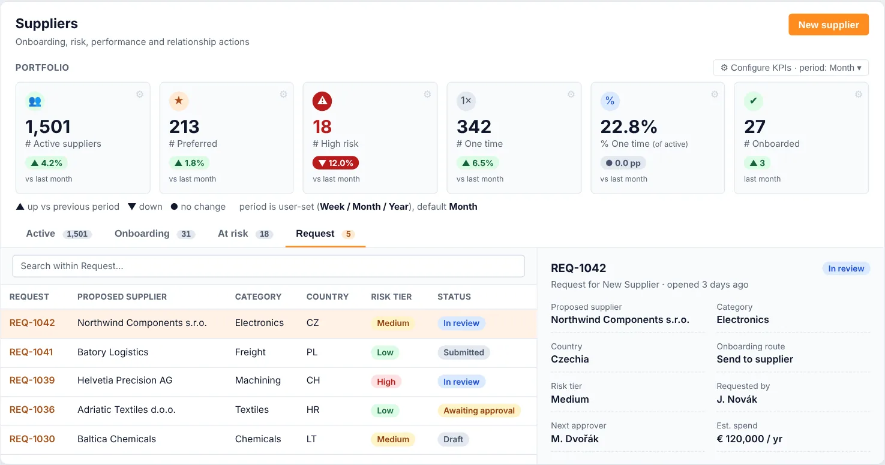

Vender
Conquiste clientes entre empresas verificadas.
SELYVO Core
O SELYVO Core dá às organizações maiores o seu próprio espaço de trabalho — fornecedores, questionários, catálogos e fluxos de processos com verificações de IA — ligado ao SELYVO Market.

SELYVO Core
Fornecedores ativos, preferenciais, de alto risco e em integração, com os KPI que escolher, e cada pedido de novo fornecedor numa só fila.
Conjuntos de perguntas reutilizáveis para integração, avaliação e ESG, respondidos pelos fornecedores com comprovativos e pontuados.
Um catálogo para colaboradores com artigos preferenciais, pacotes e orçamentos por centro de custo. Os pedidos seguem para aprovação.
Fluxos de aprovação em que uma verificação de IA analisa um fornecedor ou um documento e devolve «aprovado», «reprovado» ou «a rever». Decide uma pessoa.
Use-o como módulos integrados do SELYVO, ou como uma única interface harmonizada sobre os sistemas ERP, CRM e de compras que mantém.
Cada limite e cada valor de referência são definidos pelos seus operadores. Nada fica escrito no código.

Questionários para integração, avaliação e ESG.

Pedir e comprar: o catálogo para colaboradores.

Um processo com uma verificação de IA como passo de aprovação.
O SELYVO Core liga-se ao SELYVO Market em Sistemas ligados.
Os questionários do SELYVO Core chegam aos seus fornecedores no SELYVO Market.
O Core funciona ao lado dos sistemas que já utiliza.
Vídeo
Ver esta parte da visita guiada: 5:12 · Sistemas ligados
Visita · 5:51
Todo o SELYVO Market, ecrã a ecrã: vendas e compras, encomendas, faturas verificadas no SELYVO, despesas, projetos, MailChat, stock e sistemas ligados.
Este vídeo está em inglês.
Não. O SELYVO Market funciona por si só. O Core destina-se a organizações que querem os seus próprios processos e espaço de trabalho.
Sim. Pode ser o sistema onde o trabalho acontece, ou uma interface única sobre os sistemas que mantém.
Com um processo, como a integração de fornecedores ou as compras dos colaboradores, medido antes e depois.
Conquiste clientes entre empresas verificadas.
A proposta certa, de fornecedores de confiança.
Entregue o trabalho. Não perca de vista o orçamento.
Fature, verifique e receba — com menos trabalho.
Cada empresa no SELYVO é conhecida por, pelo menos, outra. Peça a um cliente ou fornecedor que seja membro que convide a sua empresa — ou escreva-nos.
Contacto
Escreva-nos sobre o SELYVO Market, o SELYVO Core ou uma parceria. Respondemos por e-mail.